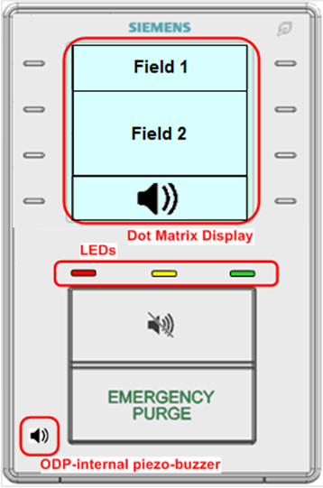
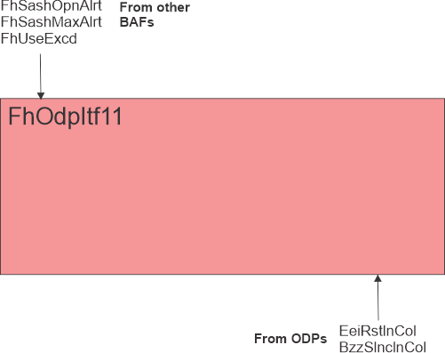

Fume hood operator display panel interface, QMX3.P87 (FhOdpItf11)
Overview
The application function "Fume hood operator display panel interface 11, QMX3.P87" (FhOdpItf11) is connected to a fume hood controller. The display, alarm lights, alarm horn, and green leaf indicator are controlled based on the current state of the fume hood. The QMX3.P87 provides buttons to put the fume hood in emergency mode, silence alarms and, provide energy efficiency request. The ODP is a networked PL-Link device.
Note
The ODP is not fully functional during setup and commissioning when the administrative mode of the fume hood is "Startup". See the room segment AF Hvac16 for information on the fume hood administrative mode object.
Main features:
- Display, field 1
- Display, field 2
Function


Display, field 1: There are 14 messages in the field 1 text catalog that can be displayed in field 1 of the display by three multistate process value objects (Fld1Txt1Opd, Fld1Txt2Opd, and Fld1Txt3Odp).
- (Blank Display)
- Start Up Mode
- Out of Service
- Close the Sash
- Normal
- Low Alarm
- Low Warning
- High Warning
- High Alarm
- Emergency
- Purge
- Failure
- Fire
- Unoccupied
Coordination of displaying the text based on the objects Fld1Txt1OpdFld1Txt1OdpCol , Fld1Txt2OpdFld1Txt2OdpCol , and Fld1Txt3OdpFld1Txt3OdpCol is handled within the ODP.
The value of the multistate objects is determined by the inputs Effective Administrative Mode, Fume Hood Mode, Air Flow Alarm, Fume Hood Use Exceed signal from room, and Energy Efficiency Request.
Display, field 2: Field 2 of the ODP display can be used to display; text, average face velocity/setpoint or average volume/setpoint, the fume hood mode/setpoint. The function of displaying setpoint or value resides in the ODP. There are 7 modes for field 2 (Fld2ModOdp).
- (Blank Display)
- Text
- Face Velocity Average/Setpoint
- Exhaust Volume Average/Setpoint
- Exhaust Level
- Differential Air Pressure
- Dynamic Icon (Close sash animation)
There are three messages in the field 2 text catalog (Fld2TxtOdp).
- (Blank Display)
- Off
- Closed
The value of the Fld2ModOdp and Fld2TxtOdp multistate objects is determined by the inputs FhSpAirFlEh, FhAirFlMinEh, Effective Administrative Mode, Fume Hood Operating Mode, Air Flow Alarm, Sash Opening Alert, Energy Efficiency Request, Fume Hood Use Exceed signal from room, and the configuration extension item; Display Value.
Displaying face velocity or exhaust airflow: The face velocity and exhaust volume can appear unstable when displayed on the ODP. The configuration extension items DspyWght, DspyRslVFace and DspyRslAirFlEh are used to stabilize the displayed value(s).
DspyWght is entered as a percentage and is used to calculate a weighted average.
DspyRslVFace represents the increments of the velocity reading that will be displayed relative to the face velocity setpoint.
DspyRslAirFlEh represents the increments of the exhaust airflow reading that will be displayed relative to the exhaust airflow setpoint.
The control of the fume hood can appear to be slow on the ODP when DspyWght is set low and a large sash adjustment happens. The unfiltered face velocity with DspyRslVFace or exhaust volume with DspyRslAirFlEh applied will be displayed when the exhaust airflow setpoint changes by more than 20% compared to the previous exhaust airflow setpoint. The unfiltered reading will be used until the difference between velocity/volume and setpoint is less than or equal to DspyRslVFace / DspyRslAirFlEh.
The face velocity setpoint to ODP, SpVFaceOdpCol, is set to the same value as the fume hood face velocity setpoint.
The exhaust air flow setpoint to the ODP, SpAflEhOdpCol, is set to the same value as the fume hood exhaust air flow setpoint.
The ODP configuration extension item DspyValue determines if the face velocity or exhaust volume is displayed. The value displayed on the ODP is calculated for both VFaceOdp and SpVFaceOdpCol.
Alarm Lights: The red, yellow, and green LED alarm lights (RedLedOdp, YlwLedOdp, and GrnLedOdp) on the ODP have 6 operational states.
- Continuously Off
- Flash (100ms / 900ms)
- Blink (500ms / 500ms)
- Blink 5 times, then stop
- Blink 5 times every minute
- Continuously On
The values of the multistate objects for the LEDs are determined by the inputs Fh Mode, Effective Administrative Mode, and Air Flow Alarm.
The three lights on the display (green, yellow, red) are programmed to illuminate on their own or in combination. In general, a solid green light indicates that the fume hood is functioning normally. A yellow light (solid or flashing) signals that the fume hood has entered a state requiring further attention; while it may continue to function, the user should examine both the panel and the fume hood to determine why the light is yellow before resuming normal use. A red light indicates a serious issue affect both the operation of the fume hood and the safety of the lab. If the user has not already stopped using the hood, stop immediately upon seeing the red light and refer to further instructions below. If you are uncertain about what to do next, do not use the fume hood. Contact your laboratory manager for instructions.
When the green LED light switches from solid to flashing, the hood is working correctly, but in a reduced flow mode, not intended to protect a worker actively using the hood. The display screen may indicate the current mode. If the flashing light is accompanied by an audible alarm, there is an issue that affects the normal operation of the fume hood and/or lab safety. In all cases, if you are uncertain about what has caused the status or the display or lights to change, stop using the fume hood and consult your laboratory manager.
Some fume hoods employ an optional, integrated fire suppression system that will attempt to extinguish a fire within the hood area. This system can be configured to communicate with the QMX3.P87 display panel. If a fire suppression system is installed and communicating with the panel, some additional light functionality is enabled. If the system is actively fighting a fire inside the hood, (Fire Suppression Status = Alarm) a solid red light will appear. A malfunction detected with the fire suppression system (Fire Suppression Status = Trouble) will cause a solid yellow light to appear. Note that other lights and notifications may be present in addition to these indicators related to fire suppression.
Alarm Horn: The alarm horn (BzzModOdp) on the ODP has 6 operational states.
- Continuously Off
- Short Buzz (100ms / 900ms)
- Long Buzz (500ms / 500ms)
- Buzz 5 times, then stop
- Buzz 5 times every minute
- Continuously On
The value of the multistate object for the alarm horn is determined by the inputs Fh Mode, Effective Administrative Mode, Sash Alert, Sash Open Time, and Air Flow Alarm.
The horn should be turned on after the silence button has been pressed and the alarm condition has not cleared and a new alarm comes in. Silencing the horn and updating the display with the corresponding icon is a local function in the ODP. The AF does monitor the horn silence button (BzzSlncIn) and updates a multistate output (BzzStaOdp) with 3 possible states used to display the alarm horn icon.
- No Alarm
- Alarm Active, Alarm Horn On
- Alarm Active, Alarm Horn Silenced
If BzzSlncIn is activated while FhSashOpnAlrt is active, the timer for the switch-on delay for the sash opening alert will be reset.
BzzStaOdp will not show the silenced icon when the silence button is pressed due to a sash alert alarm.
Green Leaf: The Green Leaf LED (EeiOdp) on the ODP has 5 operational states.
- Undefined
- Poor
- Satisfactory
- Good
- Excellent
Control of the green leaf LED color is handled within the ODP. It will be green when EeiOdp has a value of 4 or higher, red if a value of 2 or 3, and off if a value of 1.
The value of the multistate object for the green leaf LED is determined by the inputs Fh Mode, Effective Administrative Mode, Air Flow Alarm, Sash Alert, Fh Air Flow Setpoint, Fh Air Flow Minimum and a energy efficiency indication from the setpoint AF.
Configuration
 Parameters
Parameters
Description | Parameter | Default value |
|---|---|---|
Display resolution for face velocity | DspyRslVFace | 0.02 [m/s] |
Display resolution for exhaust air volume | DspyRslAirFlEh | 5 [m3/h] |
Display weight If DspyWght is set to zero, the Operator Display Panel will “freeze” at the last read value. Setting DspyWght to a value other than zero (suggested value is 30%) allows the Operator Display Panel to update the displayed face velocity. | DspyWght | 100 [%] |
Value to display ▶ Alarms will still be displayed at the ODP if set to Blank. 1:Blank | DspyValue | 2:Face velocity |
Switch-on delay for sash opening alert | DlyOnSashAlrt | 300 [s] |
Enable sash tone ▶ Set to yes to allow the buzzer to be activated in the event of a sash opening alert or in the event of a sash maximum opening alert. 0:No | EnSashTone | 0:No |
Switch-off delay for sash maximum opening buzzer | DlyOffSshmBzz | 0 [s] |
Air velocity unit | AirVUnit | [m/s] |
Air volume flow unit | AirFlUnit | [m3/h] |
Interface
Interface | Description | Type | Ref. | Owned by | |
|---|---|---|---|---|---|
BzzSlncInCol | Collection of buzzer silence input value | ColView | ● | - | |
| BzzSlncInRs | Result of buzzer silence input value 0:Off | BCalcVal | ● | - |
BzzSlncIn | Buzzer silence input value 0:Off | BCalcVal | ◉ | Room segment / Field device | |
Fld1Txt1OdpCol | Collection of ODP field 1 text message 1 | ColView | ● | - | |
| Fld1Txt1Odp | ODP field 1 text message 1 1:Blank | MPrcVal | ◉ | Room segment / Field device |
Fld1Txt2OdpCol | Collection of ODP field 1 text message 2 | ColView | ● | - | |
| Fld1Txt2Odp | ODP field 1 text message 2 Enumeration see ODP field 1 text message 1 | MPrcVal | ◉ | Room segment / Field device |
Fld1Txt3OdpCol | Collection of ODP field 1 text message 3 | ColView | ● | - | |
| Fld1Txt3Odp | ODP field 1 text message 3 Enumeration see ODP field 1 text message 1 | MPrcVal | ◉ | Room segment / Field device |
Fld2ModOdpCol | Collection of ODP field 2 mode indicator | ColView | ● | - | |
| Fld2ModOdp | ODP field 2 mode indicator 1:Blank | MPrcVal | ◉ | Room segment / Field device |
Fld2TxtOdpCol | Collection of ODP field 2 text message | ColView | ● | - | |
| Fld2TxtOdp | ODP field 2 text message 1:Blank | MPrcVal | ◉ | Room segment / Field device |
GrnLedOdpCol | Collection of ODP green LED mode | ColView | ● | - | |
| GrnLedOdp | ODP green LED mode 1:Off | MPrcVal | ◉ | Room segment / Field device |
YlwLedOdpCol | Collection of ODP yellow LED mode | ColView | ● | - | |
| YlwLedOdpCol | Collection of ODP yellow LED mode Enumeration see ODP green LED mode | MPrcVal | ◉ | Room segment / Field device |
RedLedOdpCol | Collection of ODP red LED mode | ColView | ● | - | |
| RedLedOdp | Collection of ODP red LED mode Enumeration see ODP green LED mode | MPrcVal | ◉ | Room segment / Field device |
EeiOdpCol | Collection of ODP energy efficiency indicator | ColView | ● | - | |
| EeiOdp | ODP energy efficiency indicator 1:Undefined | MPrcVal | ◉ | Room segment / Field device |
BzzModOdpCol | Collection of ODP buzzer mode | ColView | ● | - | |
| BzzModOdp | ODP buzzer mode 1:Off | MPrcVal | ◉ | Room segment / Field device |
BzzStaOdpCol | Collection of buzzer state for ODP icon | ColView | ● | - | |
| BzzStaOdp | Buzzer state for ODP icon 1:Off | MPrcVal | ◉ | Room segment / Field device |
AirFlEhOdpCol | Collection of exhaust air volume flow for ODP | ColView | ● | - | |
| AirFlEhOdp | Exhaust air volume flow for ODP | APrcVal | ◉ | Room segment / Field device |
VFaceOdpCol | Collection of face velocity for ODP | ColView | ● | - | |
| VFaceOdp | Face velocity for ODP | APrcVal | ◉ | Room segment / Field device |
SpVFaceOdpCol | Collection of face velocity setpoint to ODP | ColView | ● | - | |
| SpVFaceOdpCol | Collection of face velocity setpoint to ODP | APrcVal | ◉ | Room segment / Field device |
SpAflEhOdpCol | Collection of exhaust air volume flow setpoint to ODP | ColView | ● | - | |
| SpAirFlEhOdp | Exhaust air volume flow setpoint to ODP | APrcVal | ◉ | Room segment / Field device |
FhSashOpnAlrt | Fume hood sash opening alert | BPrcVal | ◉ | Hvac16 | |
FhSashMaxAlrt | Fume hood sash maximum opening alert | BPrcVal | ◉ | Hvac16 | |
FhUseExcd | Fume hood use exceeded 0:Off | BCalcVal | ● | - | |
Engineering and commissioning
The ODP is not fully functional during setup and commissioning when the administrative mode of the fume hood is "Startup". See the room segment AF HvacLgt16 for information on the fume hood administrative mode object.